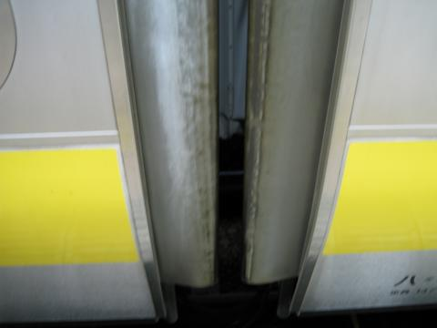
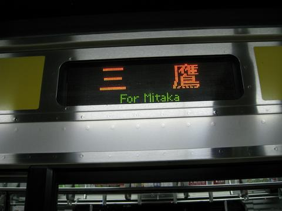
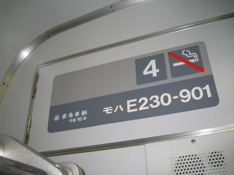
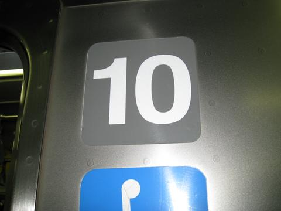

209系（左）とE231系（900番台を除く）ではつり革の形状も異なり、ドア前とドア間のつなぎ目も違う。個人的にはE231系の形のほうが握りやすい気がする。
中央・総武緩行線を走る車両の形態解析
中央・総武緩行線は三鷹～千葉間60.2㎞を結ぶ、東京の大動脈のひとつである。性格が似ている京浜東北線と比較すると、路線の固有の愛称がないのがあまりにもかわいそうだが、法政大学市ヶ谷キャンパスにアクセスする唯一のJR線として本学の多くの学生にも利用されている。
しかし、この路線を走る車両は１種類しかないと思っていないだろうか？素人目には全く同じに見えるかもしれないが、実は中央・総武緩行線には大きく分けて２種類、細かく分けると実に５種類もの形態の車両が走っているのである。かくいう自分も、ここまで細かい違いを見つけたのは大学に入って毎日この路線を使うようになってからだった。違いをまとめたWebページはこれまでにも探してみたことがあるが、満足の行くものは見つからなかったので今回自分で作ってみた。ここでは日常乗っている範囲で目に付く外観や車内を中心に細かな違いを探してみたい。
まずはそれぞれの車両について簡単に解説する。東急車輛製・新津車両製作所製の車両と川崎重工製の車両とでは車内外の一部造作が異なるが、地下鉄東西線乗り入れ用のE231系800番台を除き、中央・総武緩行線には川崎重工製の車両はないので、製造メーカーによる違いはほとんどない。
・209系500番台1次車
中央・総武緩行線では当初、209系に代わる次世代の車両（現在のE231系）によって103系などの旧型車両の置き換えを行う予定であったが、同線の103系で故障が多発し、床から火花が出て乗客を負傷させるという事故も起こった。このため車両の置き換えを予定を前倒しして行うことになったが、新型車両はまだ試作の段階で、量産には時間が必要だった。そこで車体は209系950番台と同一の拡幅車体としながらも、システム的には従来の209系を踏襲するという209系500番台を暫定的に投入して、新型車両量産までのつなぎとすることになったのである。見た目は209系950番台と似ているが、209系950番台で試用された新機軸は採用されず、機器類は従来の209系とほぼ同じである。全車新津車両製作所製。
・209系500番台2次車
1999年度に新造された編成で、年度末にはE231系の量産が始まったことから8本で製造が終了した。基本的な仕様は1次車と同じである。ただしパンタグラフがシングルアームとなり、車内ドア上のLED表示機の下にあった手がけがなくなった点が異なる。
最後に増備された2本は京浜東北線のデジタルATC化工事による予備車不足を補うため、またデジタルATC化使用開始後の増発のために京浜東北線への転用が当初から考えられており、実際に浦和電車区に転属した。さらに2006年末にも老朽化した京浜東北線の元901系編成を置き換える目的でミツ513～515編成が浦和電車区へ転属したが、京浜東北線へのE233系投入によりこれら5本は同線から撤退、一本は中央・総武緩行線に戻りミツ516編成となった。他の4本は京葉線に転属して同線の201系4本を置き換えたが、京葉線にもE233系の投入が始まったことにより、再び動きを見せている。結果的にこのグループは現在4本が中央・総武緩行線に在籍している。全車新津車両製作所製。
・E231系900番台（209系950番台）
209系に代わる次世代の通勤型車両の試作車両として、JR東日本と東急車輛の共同開発の結果誕生した車両である。機器の改良により通勤型車両の加速性能と近郊型車両の高速性能を両立させ、また車体も近郊型と同様の拡幅車体とし、従来の209系とE217系を統合した「一般型車両」となった。最大の特徴はＴＩＭＳと呼ばれる列車情報管理システムを搭載し、車両の機器への指令などをコンピュータ化することで車両間の引き通し線などを大幅に削減したことである。従来車との違いは乗客からは分からないが、メンテナンスフリーに大きく貢献したハイテク車両である。製造メーカーは6扉車を含む5両が東急車輛製、残りの5両が新津車両製作所製と分かれており、また4扉車のドアモーターにリニアモーター駆動を採用したり、編成中に2種類の制御装置を搭載するなど、新機軸を多く採用しているのも試作車らしい。しかし量産車と比較すると、吊り革や窓などは209系のものであり、ハード面はE231系、ソフト面は209系の仕様を持った車両であるといえる。なお2種類の制御装置は通勤タイプと近郊タイプでそれぞれ採用され、リニアモータードアエンジンも近郊型や常磐快速線に投入された車両で採用された。E231系登場後に車号がE231系900番台に改番されてE231系に編入され、現在に至っている。2009年には特徴的だったリニアモータードアエンジンが量産車と同じスクリュー式に変更されている。
・E231系0番台量産車
209系950番台の量産車である。中央・総武緩行線の車両の約8割を占める主力車両である。先述のように通勤タイプと近郊タイプが存在し、合計で2500両以上も製造され、首都圏で一大勢力を築き上げた。窓や吊り革など一部の設備は新設計であり、209系950番台とは異なる。209系500番台との運用上の最大の違いは6扉車が連結されていることで、209系はＣ運用、E231系はＢ運用と分けられ、最も混雑する朝ラッシュ時の西行きはE231系で固められている。しかし、車両のやりくりの都合で、Ｂ運用に209系が入ったり、Ｃ運用にE231系が入ることもある。基本的には新津車両製作所製だが、同所の製造能力で賄いきれない分については東急車輛製である。なお先述の209系ミツ516編成が復帰したことにより、ミツ27編成が中間のサハ4両を抜いて東京総合車両センターへ転属した。これは新津車両製作所で製造される山手線向けの4扉サハを、この編成の中間に連結して回送・試運転を行うための措置である。
・E231系0番台増備車
老朽化した京浜東北線の元901系編成3本を置き換えるために209系500番台3本を浦和電車区に転属させることになり、その代替として製造された車両。E231系通勤タイプの最終増備車である。車内の貫通扉や車外スピーカーなど、一部の仕様が変更されており、これらは常磐快速線や山手線などに投入された車両に準じている。一方で冷房装置や車内LED表示機など、2002年度までの増備車と同一仕様となっている点も見受けられる。3本のみの追加増備のため全車東急車輛製。
分類表
各グループの違いをまとめた。言葉で表現しにくいものは別に下に写真つきで紹介している。
| 形式 | 209系500番台 | E231系900番台 | E231系0番台 | ||
|---|---|---|---|---|---|
| 細分・定義 | 1次車 | 2次車 | 試作車 | 量産車 | 増備車 |
| 在籍編成数 | 9本 | 4本 | 1本 | 42本 | 3本 |
| 最高速度 | 110㎞/h | 120㎞/h | |||
| 製造年度 | 1998年度 | 1999年度 | 1998年度 | 1999～2002年度 | 2006年度 |
| 製造所 | 新津 | 新津 | 新津・東急 | 新津・東急 | 東急 |
| 先頭部分 | 白色 | 銀色 | |||
| 乗務員扉 | 無地の銀色・曲線 | 黄色に着色・直線 | |||
| 運行番号表示機 | 3桁 | 5桁 | |||
| 先頭車JRマーク | 乗務員室直後の戸袋部・黒色 | 前から3番目の窓下帯部・銀色 | |||
| ６扉車 | なし | あり | |||
| パンタグラフ | 菱形 | シングルアーム | |||
| 車外スピーカー | なし | 準備工事 | |||
| 窓 | 灰色 | 緑色 | |||
| つり革 | 五角形 | 三角形 | |||
| 貫通扉 | ドアチェッカーなし | ドアチェッカーあり | |||
| 冷房吹き出し口 | ＦＲＰ製 | アルミ製 | |||
| 禁煙マーク | 旧タイプ | 新タイプ（一部旧タイプ） | 旧タイプ | 新タイプ | |
| 車内LED | 209系タイプ | E231系タイプ | |||
| 鴨居部手掛け | あり | なし | あり | なし | なし |
| 非常用ト゛アコック蓋の取っ手 | 出っ張りあり | 出っ張りなし | |||
左が209系500番台、右がE231系。マスクの色、乗務員扉、JRマークの位置などが異なる。形式にかかわらず前面下部にあるグレーの排障器は当初同じ形状だったが、2007年よりE231系については近郊タイプの後期車で採用されたものと同じ強化型の大きなタイプに交換され、2008年２月ごろには全編成が交換された。また209系500番台でも2009年2月から3月にかけて、E231系よりさらに若干大きい排障器に交換され、写真左側のタイプは現在存在しない。
パンタグラフは209系500番台１次車のみ菱形（左）で、他はシングルアーム。同じシングルアームでも209系500番台2次車は肘が千葉方に、E231系（900番台を含む）は三鷹方に伸びている。

車両間にある転落防止用の外ほろ。先輩情報だが、209系500番台とE231系900番台（左）では帯が張られ、E231系（右）にはない。

209系500番台（左）とE231系（右）では行先表示のフォントが違い、E231系は速度が60km/h以上のとき消灯する。
「三鷹」表示は209系500番台では「鷹」の字が一部省略され、E231系では「三」の字が左にずれている。東西線直通用のE231系800番台(下)は正常。
2006年度の増備車には車外スピーカーの設置のためのスペースが準備されている。E231系800番台、常磐線のE531系、中央線のE233系(右)では正式に設置されている。ちなみに写真のE233系は川崎重工製で、帯の上の雨樋の出っ張りが小さい。
車内のLED表示機。209系500番台（左）とE231系（900番台を含む）では、
・駅名が3文字の駅での停車中の表記の文字の間隔
・英語の次駅案内のハイフンの後が大文字か小文字か
が異なる。また先輩情報だが、停車中の駅名表示の点滅の間隔も異なる。
また1998年度製造の209系500番台１次車とE231系900番台は広告枠の下に手がけがあり、非常用ドアコックの蓋の膨らみが角ばっている。2006年度製造車はさらにここの取っ手の形状も異なり、触ってみれば分かるが、質感も違うような気がする。（FRP製から金属製に変更されている？）
これらの違いから、鴨居部だけでここで分類した５グループを見分けることが可能である。
座席の柄や外見は全車同じで、柄については他の各線でも採用されている標準タイプである。座席は209系500番台に比べてE231系量産車は硬くなったが、2006年度製造車(右)は東海道線用以降の車両で採用されたSバネ入りのものとなり、座り心地が若干改善された。さらに座席下のヒーターの取り付け角度も斜めに変更されている。
韓国地下鉄火災を受けて、2006年度製造車（右）はエアコンの吹き出し口が難燃性の素材に変更され、形状も違う。
車両間の貫通扉。2006年度製造車（右）はドアノブの形と窓の大きさが違う。また、やはり火災対策でドアチェッカーがつき、固定金具をかけない限りドアは自動で閉まるようになっている。
さらに、それまでは電動車ユニットの両端のみ（編成で4ヶ所）に設置されていたが、全車両間（編成で9ヶ所）に設置されている。
209系（左）とE231系（900番台を除く）ではつり革の形状も異なり、ドア前とドア間のつなぎ目も違う。個人的にはE231系の形のほうが握りやすい気がする。
車端部とつり革の拡大。2006年度製造車は禁煙マークのピクトグラムが違う。また209系500番台には千葉寄り（千葉寄り先頭車は三鷹寄り）に出っ張りがあるが、900番台も含めE231系にはない。TIMS採用による引き通し線削減の影響と思われる。省エネ電車を謳う緑色のステッカーも209系の特徴の一つで、元209系のE231系900番台にはない。
なお禁煙マークはステッカーの張り替えのため、従来車でも新タイプになっている車両がある。しかもこの場合編成単位でなく車両単位で違うので、把握は難しい。

E231系900番台は1～5号車が東急車輛製、6～10号車が新津車両製作所製である。またなぜか禁煙マークが新タイプである。しかし2枚のみは旧タイプの禁煙マークであり、しかも5号車に連結されている6扉車のサハE230-901については、本来は東急車輛製なのに両端でステッカーが違っていて東急車輛と新津車両製作所の合作（？）ということになっている。1～4号車でも、製造メーカーのところが消されているなど、謎が多い。恐らく209系950番台からE231系900番台に改番された際にこうなったと思うのだが、真相は不明である。なお、6～10号車についてはすべて左上と同様のステッカーであった。

号車表示のステッカー。基本的には左側だが、一部編成は室外のみ右側のようにフォントが異なる。真相は不明。
ドアの外側には先頭車のみ触れ止め金具がついている。しかしE231系の第8編成以降では全車取り付けられていない。真相は不明。
今後も気まぐれに更新してゆく予定です…。
最終更新 2010.7.26.